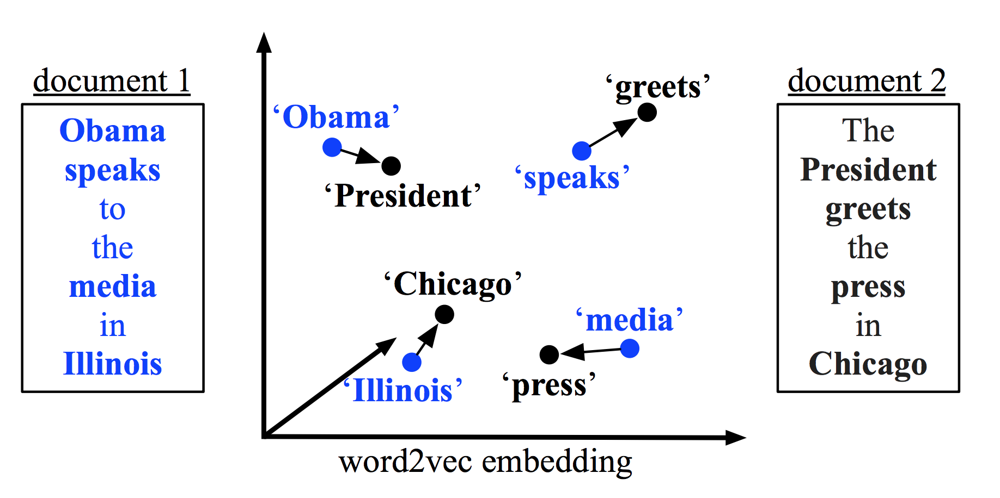

Methods to Calculate Sentence Smilarity
Updated:
Calculating the similarity between sentences is not an easy task. To tackle this task, we first need to give each sentence a representation (eg. a vector) and then use a measurement (eg. cosine distance) to compute the distance between every sentence pair. Based on whether the dataset is labeled, those methods could be categorized into unsupervised methods and supervised methods. Since the labeled data is very scarce, researchers have more interested in unsupervised methods.
Unsupervised Methods
Ngram
The ngram is a very trivial method. Extract n-gram from the sentence and count how many n-grams they have in common. For 1-gram, we can also apply Longest Common Subsequence (LCS) to take the 1-gram order into consideration.
TF-IDF
the TF-IDF calculates the score of each word which is a combination of the Term Frequency(TF) and Inverse Document Frequency(IDF). We first transform the sentence to the bag of words. Then a sentence vector $\vec{s}$ whose length is as large as the vocabulary size is constructed. We set each dimension of $\vec{s}$ to the corresponding TF-IDF value or 0 if the word does not appear in the sentence. Now, we can use cosine distance to determine the similarity between sentences.
WordVec
The WordVec is a learned vectorized representation of words. There exist various methods to train word vectors and we can use trained word vectors to represent sentence vectors.
The first one is to simply average word vectors plainly[1] or with weight[2] in a sentence. The second one is to use Word Mover’s Distance(WMD)[1] to measure the similarity which is derived from the well-studied Earth Mover’s Distance. The WMD calculates the total cost of sentence A being transformed to sentence B. The larger the cost from A to B, the less similar between A and B.

Figure 1 Word Mover’s Distance (from [1])
The WMD is based on word travel cost $c(i,j)$ which is measured by the Euclidean distance between the two word vectors $||\vec{w}_i-\vec{w}_j||_2$. To handle the repeated occurrence of words in one sentence, the sentence is represented as normalized bag-of-words. For each word $i$, $d_i$ denotes the word frequency in the sentence. To measure the WMD of words in A being transformed into B, a flow matrix $T$ where $T_{ij} >= 0 $ denotes how much of word i in A travels to word j in B is needed. This matrix $T$ satisfies 1) $\sum_{j} T_{ij} = d^A_{i}$, the outgoing flow from word i equals $d^A_{i}$ , 2) $\sum_{i} T_{ij} = d^B_{j}$, the incoming flow to word j equals $d^B_{j}$. Hence, the target here is to find the $T$ that
$$
\mbox{min} \sum ^{n}_{i,j=1} T_{ij} c(i,j)
$$
After getting the $T^*$, the WMD is $\sum ^{n}_{i,j=1} T^{*}_{ij} c(i,j)$. More details such a fast distance computation could be seen in [3].
Figure 2 Two Word Mover’s Distance Examples (from [3])
SentVec
The specific SentVec model introduced here is proposed by Matteo Pagliardini et al. [4] which could be interpreted as “a natural extension of the word contexts from C-BOW to a larger sentence context”. However, it augments the sentence embeddings by n-gram embeddings.
Like other matrix factor models, it has the optimization form
$$
\mathop{min}_{U,V} \sum_{S \in C} f_{S}(UV\iota_{S})
$$
where $U \in R^{k \times h}$ and $V \in R^{k \times |\nu|} $ are parameter matrices. For a given sentence $S$, the indicator vector $\iota_{S} \in \{0, 1\}^{|\nu|}$ is a binary vector encoding. This equation above is used to learn source $\vec{v}_w$ and target $\vec{u}_w$ embeddings from V and U respectively. The sentence embedding $\vec{v}_S$ is obtained as the average of the source word embeddings of its constituent words which not only contains 1-gram but also n-gram embeddings. It is modeled as
$$
\vec{v}_S := \frac{1}{|R(S)|} \sum_{w \in R(S)} \vec{v}_w
$$
where $R(S)$ is the list of n-grams.
AutoEncoder
The AutoEncoder learns a hidden representation by first compressing data and then recovering it. For sequential data, the AutoEncoder is usually based on the Seq2Seq architecture.
Sequential Denoising AutoEncoder
The DAE model would corrupt the high-dimensional input data according to some noise function and then try to reconstruct it. Felix Hill et al. adopts a noise function $N(S|p_{o}, p_{x} )$ in which $p_{o}, p_{x} \in [0,1]$ are free parameters the former of which is the probability to drop out a word $w$ in a sentence and the latter of which is the probability to swap $w_{i}$ and $w_{i+1}$. Interestingly, compared the model without fixed pre-trained word embeddings, the model with it is not always better. Also, it is observed that unsupervised word-order-free models (BOW) have a better performance than unsupervised word-order-sensitive models (RNN).
Recurrent Variational AutoEncoder
The promising part of the RVAE is that it theoritically would put similiar sentence vectors close in continuous space. The loss term would prevent models from cheating by just “memorizing” input data. The way to enforce this constraint is to assume that a RVAE contains a probability model of data $x$ and latent variable $z$ $p(x,z)=p(x|z)p(z)$. Each data $x_i$ is generated by 1) draw a sample $ z_i \sim p(z) $ 2) draw a sample from $ p(x|z)$ and it is $ x_i$.
To do obtain a good latent variable $z$ given $x$ , we need to compute
$$
p(z|x) = \frac{p(x|z)p(z)}{p(x)}
$$
However, calculating $p(x)$ is intractable since it needs to marginalize out the latent variables. Instead, Variational inference approximates the posterior with a family of distributions $q_{\lambda}(z|x)$. In order to ensure the $q_{\lambda}(z|x)$ approximates the true posterior $p(z|x)$, we use Kullback-Leibler divergence to measure the difference between the two distribution. Hence, we want to find a $q_{\lambda}(z|x)$ that
$$
min_{\lambda} KL(q_{\lambda}(z|x) || p(z|x) )
$$
Once again, $p(z|x)$ occurs in the equation which we do not want. We rewrite the KL divergence as
$$
KL(q_{\lambda}(z|x) || p(z|x) ) - E_q[\log q_{\lambda}(z|x) ] + E_q[\log p(x,z) ] = \log p(x)
$$
Notice that for data x, $\log p(x) $ is a constant and KL divergence is always greater than or equal to 0. Hence, minimizing the KL divergence is equivalent to maximizing the rest part. We call the rest part evidence lower bound(ELBO).
$$
ELBO(\lambda) = E_q[\log p(x,z) ] - E_q[\log q_{\lambda}(z|x) ]
$$
Rewrite $ELBO(\lambda)$, we have
$$
ELBO(\lambda) = E_q[\log p(x|z) ] - KL(q_{\lambda}(z|x) || p(z) )
$$
In the RVAE settings, $p$ is the family of Gaussian distributions. The latent variable $z$ is sampled from a Gaussian distribution with mean 0 and std 1. The encoder learns the Gaussian distribution $p(x|z)$ and the decoder learns the distribution $q_{\lambda}(z|x)$. For each data $x$, we can use the mean $\mu$ of probability distribution $q_{\lambda}(z|x)$ as the vector representation.
Figure 3 Structure of recurrent variational autoencoder (from [6])
Other Methods
Unupervised Methods Depending on Additional Information
SkipThought, ParaVec, FastSent and Siamese C-BOW are unupervised methods depending on sentence ordering.
Supervised Methods
All models (see model list) aimed to solve Natural Language Inference (NLI) problem can be applied to sentence similarity task.
References
[1] Wieting et al. Towards universal paraphrastic sentence embeddings
[2] Arora et al. A simple but tough-to-beat baseline for sentence embeddings
[3] Matt J. Kusner et al. From Word Embeddings To Document Distances
[4] Matteo Pagliardini et al. Unsupervised Learning of Sentence Embeddings using Compositional n-Gram Features
[5] Felix Hill et al. Learning Distributed Representations of Sentences from Unlabelled Data
[6] Samuel R. Bowman et al. Generating Sentences from a Continuous Space